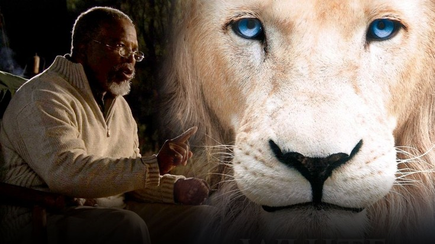
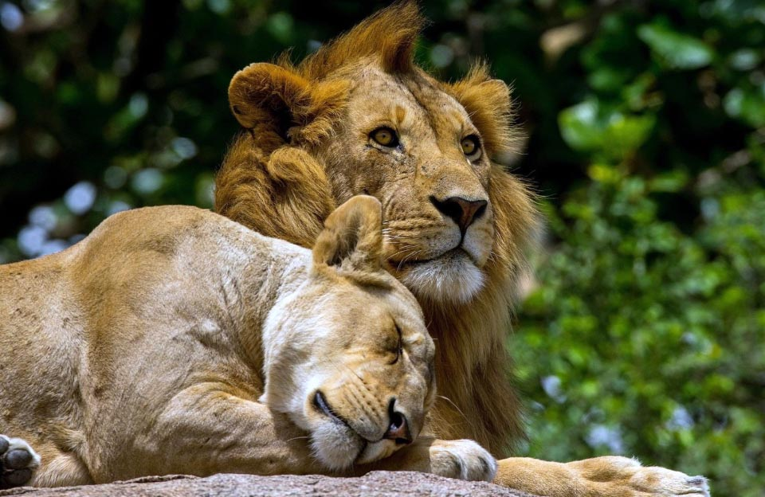
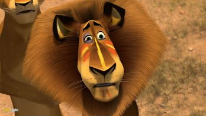
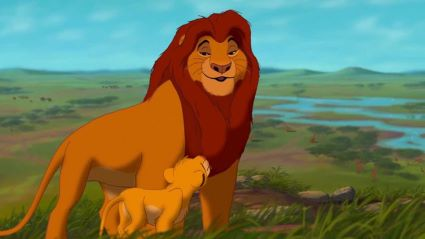
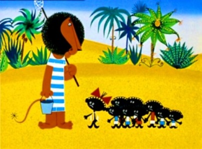

Лев - (leo) — вид хижих ссавців з роду пантер родини котових. Це
другий за величиною вид родини після тигра. Самці, які впізнавані за гривою, мають вагу від
150 до 250
кг; натомість самиці важать від 120 до 150 кг. Сучасний ареал фрагментований, лежить на південь від
Сахари, також є одна невелика популяція на північному заході Індії. У дикій
природі леви максимальна
тривалість життя становить 14 років, у неволі — 30 років. На відміну від інших видів
котів, леви є
соціальними. Група левиць зазвичай полює разом, нападаючи на великих копитних.
Леви — єдині кішки, у яких самці виразно відрізняються від самиць. Дорослі
леви-самці відрізняються
великою гривою і є набагато більшими за левиць. Лев вважається дорослим у 5 років і до цього моменту
набирає свого оптимального "бойового" розміру. Самці важать 150—225 кг, в
окремих випадках — до 240 кг
при довжині тіла без хвоста 1,7-2,5 м, хвіст — 90-110 см, висота в загривку 90-125 см. Маса самиць
становить 100—150 кг, в окремих випадках до 160 кг. Найважчий лев був убитий
в 1936 році в Трансваалі,
він важив 313 кг (книга рекордів Гіннеса).

Прайд
Прайд складається з одного-трьох самців, кількох статевозрілих самиць і
левенят обох статей. Самиці
займаються полюванням для прайду, а самці — охороною території. У прайді
рідко буває більше трьох
дорослих самців, тому що, підростаючи, молоді леви починають відвойовувати верховенство
ватажка. Якщо їм
це не вдається, їх зазвичай виганяють з прайду, і вони або створюють свій власний, або якийсь час ведуть
самотнє життя. Предки левів, як і решти котячих, були одинаками. Тому, незважаючи на соціальний устрій
зграй, характер левових прайдів доволі унікальний. Ієрархія всередині прайду
або виражена слабко, або
зовсім відсутня, що вкрай нетипово для зграйних тварин. Ця особливість виражається в постійних
конфліктах всередині прайду і в тому, що, як правило, жоден з левів, навіть дорослий самець, не володіє
беззаперечним авторитетом. З цього також випливає, що в левових громадах не буває ватажка. Попри те, що
дорослий самець є найсильнішою особиною в прайді, він не ухвалює жодні рішення. Коли йти на полювання,
на яку тварину нападати, на яку територію перейти у пошуках здобичі — все це вирішують самиці, але
навіть вони не діють згуртовано. На полюванні, як правило, кожен лев сам вибирає собі ціль;
іноді вони
розбиваються на пари, які діють спільно.
Розмноження
Межі території свого прайду панівний лев мітить, порскаючи на кущі сумішшю сечі
і виділень анальних залоз і оповіщає про те, що територія належить йому, громовим ревінням. У основі
такої територіальної
поведінки лежить потреба захистити самок прайду, яких він вважає за свою власність, від зазіхання інших
самців, а тому їхня мисливська ділянка автоматично стає його територією.

- Історія
- Див. також:
- Див. також:
Леви у мультиках


